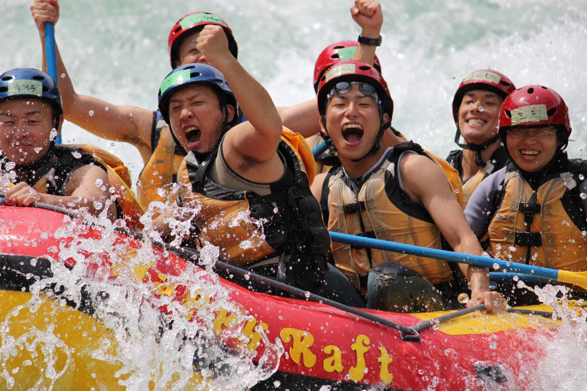
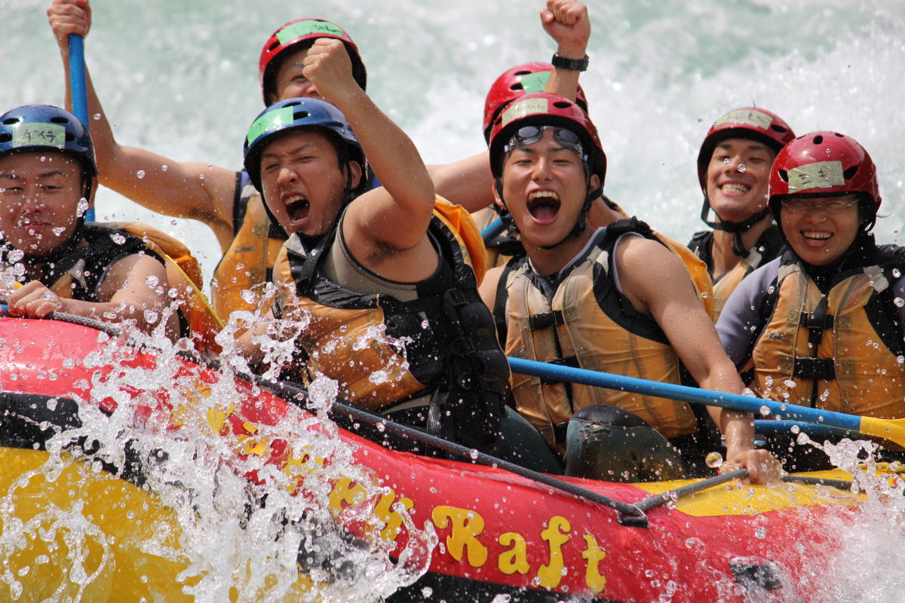

History
Welcome to White Water Rafting! Our mission is to provide thrilling and unforgettable rafting experiences for adventurers of all ages. With our expert guides and top-notch equipment, we guarantee an adventure like no other. Founded in 2005 by outdoor enthusiasts, White Water Adventures has been leading the way in whitewater rafting for over a decade. From humble beginnings as a small operation, we have grown to become one of the most trusted names in the industry.
Our journey began with a passion for exploring the great outdoors and a love for adventure. What started as a small group of friends venturing out on weekend rafting trips has evolved into a thriving business that caters to adventurers from all walks of life. Over the years, we have expanded our offerings to include a wide range of rafting trips, from gentle float trips for beginners to adrenaline-pumping whitewater excursions for the more experienced.
At White Water Adventures, safety is our top priority. We take every precaution to ensure that our guests have a safe and enjoyable experience on the water. Our guides are highly trained professionals with years of experience navigating the rivers, and our equipment is regularly inspected and maintained to the highest standards.
In addition to providing thrilling rafting adventures, we are also committed to preserving the natural beauty of the rivers we love. We partner with local environmental organizations to clean up litter and protect wildlife habitats, and we strive to minimize our impact on the environment in everything we do.
Whether you're seeking an adrenaline rush or a peaceful escape into nature, White Water Rafting has something for everyone. Join us on the river and experience the thrill of a lifetime!
Explore Our Rivers